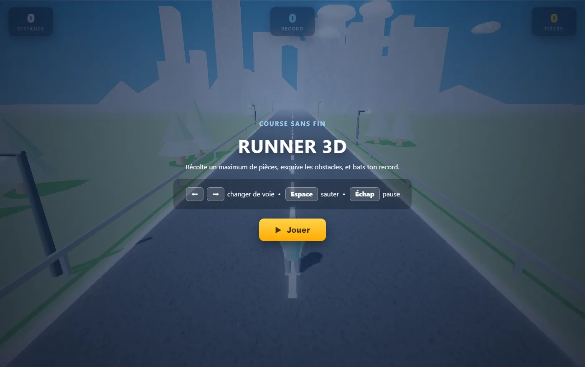

Audit de vulnérabilité à l'ingénierie sociale
Prendre un rapport de reconnaissance OSINT, décider quelle donnée est vraiment exploitable, et construire l'attaque la plus crédible sans jamais l'exécuter.
Lire la fichePortfolio 2026 · Paris
Je documente ce que je construis, méthode comprise. Onze projets, du lab réseau jusqu'à l'affiche imprimée en 300 dpi.

6 projets · 2026
Labs, audits et politiques de sécurité. Chaque fiche suit le même gabarit : contexte, ce que j'ai fait, résultat mesuré, limites assumées.
Prendre un rapport de reconnaissance OSINT, décider quelle donnée est vraiment exploitable, et construire l'attaque la plus crédible sans jamais l'exécuter.
Lire la fichePublier un service web sur le réseau Tor depuis une machine virtuelle, sans ouvrir un seul port entrant. Cinq pièges documentés, quatre qui m'ont coûté des heures.
Lire la ficheJouer l'attaquant et la victime dans la même machine virtuelle pour comprendre pourquoi une attaque aussi banale fonctionne encore. Rien n'est sorti du laboratoire.
Lire la ficheÉcrire un document qui engage une collectivité de 6 000 agents, et le défendre en dix minutes devant une direction qui a trois décisions à prendre.
Lire la ficheHuit scripts qui surveillent l'hygiène d'un serveur, un laboratoire reproductible en une commande, et une planification pour que tout tourne sans intervention.
Lire la ficheUn outil d'OSINT ne vaut pas par ce qu'il trouve, mais par la décision qu'il permet de prendre. Analyse complète, avec démonstration du mécanisme qui protège les mots de passe.
Lire la fiche5 projets · 2026
Design imprimé, direction artistique, montage vidéo et développement web. Le versant visible du même travail : comprendre une contrainte et produire un livrable propre.
Une affiche A4 imprimable en 300 dpi, déclinée en format vertical, en story et en version festive, avec la photo retouchée et détourée.
Lire la ficheUn même visuel décliné en dizaines de variantes et sur trois formats : 8K, 4K et écran de téléphone. Un système de design, pas un one-shot.
Lire la ficheUn diaporama animé de seize plans, habillé, sonorisé et rendu, avec des planches de contrôle avant livraison.
Lire la ficheUne page de garde conforme à une charte institutionnelle, produite par un script paramétrable plutôt que retapée à chaque travail.
Lire la ficheUn jeu de course sans fin en trois dimensions, jouable dans le navigateur, avec score, pièces, combo et effet de bloom.
Lire la ficheJe suis étudiant en cybersécurité à Nexa Digital School, à Paris, et je passe en deuxième année de Bachelor à la rentrée 2026. Originaire de la République démocratique du Congo, je suis arrivé en France en 2025.
Ce qui m'intéresse, c'est le raisonnement derrière la faille. Un service qu'on publie sur le réseau Tor sans ouvrir un seul port. Un mail de phishing qui ne demande pas d'enfreindre la procédure, mais de l'appliquer correctement. Un rapport de reconnaissance dont la donnée la plus spectaculaire est justement celle qu'il faut écarter.
Le reste vient du même endroit. Quand je ne fais pas de sécurité, je monte des visuels, des vidéos et des pages web, et j'applique la même exigence : que le livrable soit propre, utilisable et reproductible.
Je cherche aujourd'hui une alternance ou un stage en cybersécurité. Les pistes qui m'attirent le plus sont l'analyse de risques et la gouvernance, la défense opérationnelle et le test d'intrusion.
uniquement ce qui a servi dans un projet